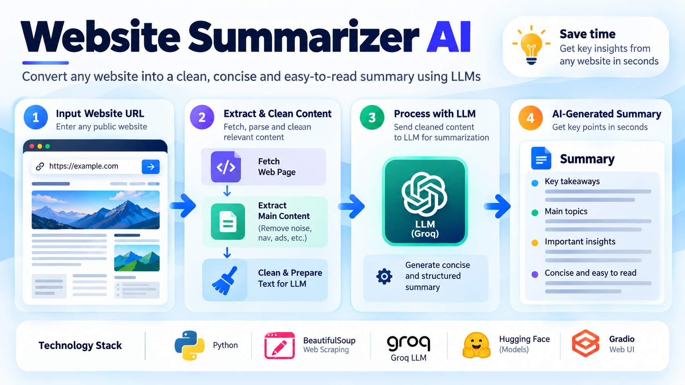

Project Case Study
Website Summarizer AI

I wanted to test a simple but practical idea: can an AI system turn a noisy web page into a concise summary that a user can read in a few seconds? The challenge was not just generating text, but cleaning up messy content and extracting the signal from the noise.
This project was one of my first hands-on attempts to turn a basic concept into a usable AI workflow: take a website URL, extract the relevant information, and produce a readable summary.
Problem
Online content is often long, cluttered, and repetitive. Most web pages include navigation menus, footers, ads, and boilerplate text that do not add much value. A user usually wants the main idea, key points, and takeaways without spending time reading the full page.
The problem was to convert raw website content into something useful with minimal friction. In other words, the goal was to reduce reading time without losing meaning.
Solution
I built a small system that follows a straightforward pipeline:
- accepts a URL from the user
- fetches the page content
- removes unwanted HTML elements and noise
- sends the cleaned content to an LLM
- returns a short, readable summary
The architecture is intentionally simple. It keeps the workflow easy to understand, easy to debug, and focused on the actual value of AI: turning messy information into something easier to consume.
Technology used
- Python
- Requests
- BeautifulSoup
- OpenAI-compatible API workflow
- Simple interface layer for usability
Key learnings
This project taught several important lessons very quickly:
- data cleaning matters as much as model choice
- prompt design strongly affects the quality and consistency of output
- simple workflows can still provide meaningful user value
- AI works best when the problem is clearly framed and the system is easy to reason about
One of the biggest lessons was that the model is only as effective as the input it receives. Even a strong LLM struggles when the content contains clutter, repeated sections, or irrelevant HTML structure. That made me realize how important preprocessing and interpretation are in real AI applications.
It also helped me understand the difference between a prototype and a product. A working demo is a strong start, but the real value comes from reliability, user experience, and continuous iteration.
Why this project matters
For me, this project was important because it demonstrated something practical: modern AI is no longer restricted to research labs or highly specialized teams. The barrier to entry for building a useful experience has dropped significantly.
More importantly, it showed me that I did not need a perfect setup to start learning. I could build a small system, test an idea quickly, and improve the design step by step. That mindset has shaped how I approach later AI projects as well.
Outcome
The result is a working AI-powered summarization app with a clear and understandable flow from input to output. It is simple, practical, and a good example of applied AI engineering: use an LLM where it adds value, while keeping the surrounding system lightweight and transparent.
This project remains one of my first concrete examples of learning AI by building, rather than only reading about it. It showed me that meaningful progress often starts with a small, focused workflow and a clear problem to solve.